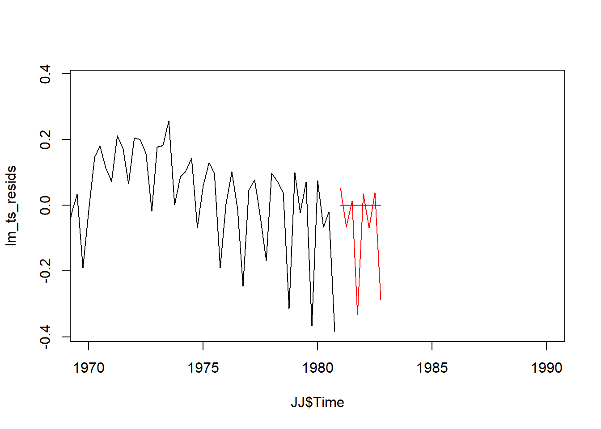
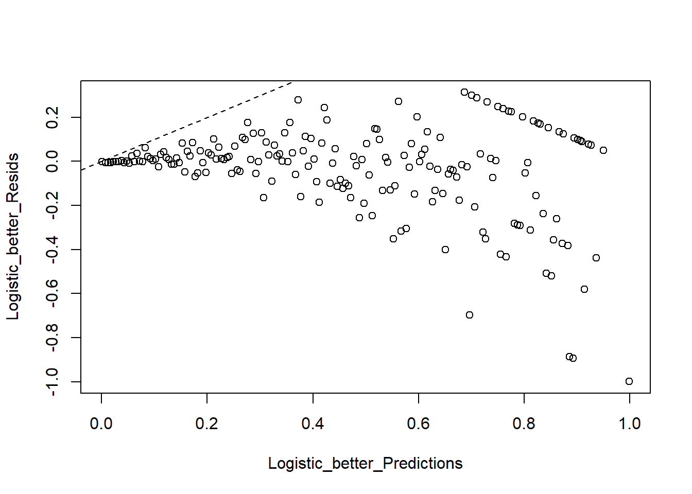
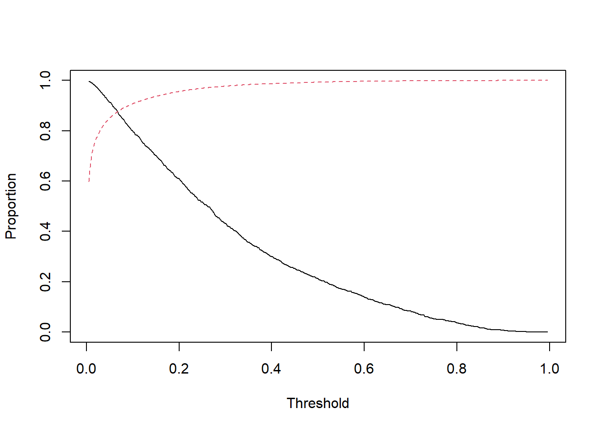

Chapter 7 Question 1:
\(1\) Logistic Regression: Major League Baseball (MLB) maintains a public facing version of it’s “Statcast” system. Since 2015, MLB teams have been leveraging data analytics to gain a competitive advantage using the raw data out of Statcast, which captures extremely high resolution views of player performance. Here we will study a dataset I have pulled and curated. We will examine which of several characteristics are predictive of a hit yielding a “home run.” The selected variables are as follows: • pitch_speed: Speed of pitch in mph. • pitch_spin: Spin rate of pitch • pitch_horizontal_movement: Horizontal movement of the pitch in feet from the catcher’s perspective. • pitch_vertical_movement: Vertical movement of the pitch in feet from the catcher’s perpsective. • plate_x: Horizontal position of the ball when it crosses home plate from the catcher’s perspective. • plate_z: Vertical position of the ball when it crosses home plate from the catcher’s perspective. • pitcher_hand: Pitcher’s throwing hand. • launch_angle: Launch angle of the batted ball. • launch_speed: Exit velocity of the batted ball (so, how fast it is going once hit by the batter) • stand: Side of the plate batter is standing from the pitcher’s perspective. • home_run: 1/0, the target variable The dataset can be loaded with the command HomeRun <- read.csv(“…/HomeRunData.csv,” stringsAsFactors = TRUE)
#??? Cannot knit the single document?# Input the dataset
HomeRun <- read.csv("E:/Cloud/OneDrive - University of Missouri/Mizzou_PhD/Class plan/Applied Stats Model II/HW1/HomeRunData.csv", stringsAsFactors = TRUE)7.1 a. (8 points) Create plots to examine how launch speed and angle may affect the probability of a home run and describe your findings.
On the first plot between launch speed and the probability of a home run, as the launch speed increase to 80 and above, the home run chance increases.
On the second plot between launch angle and the probability of a home run, as the launch angle increase to be above 10, the chance of home run increases. However, when it surpass 50 the chance of home run decreases.
# S39. class is the DV, thickness is the IV. ??? why it doesn't need binning but deviances needs it? Why is my output different from the ppt?
plot(home_run ~ launch_speed,HomeRun)
# as the lauch speed increase to 80, the home run chance increase.
plot(home_run ~ launch_angle,HomeRun)
# seems to have an u-shape effect. less than 0 and more than 50 are both bad. 7.2 b. (9 points) Fit a logistic regression model with home_run as the response and all other variables as predictors. Conduct a deviance test to assess if this model is better than the null model.
I ran the logistic regression to predict home run using all other variables.
The results show the pitch_speed, launch angle and launch speed are statistically significant predictors at 95% confidence level.
I then conducted the deviance test. The result is significant. Thus, the model is better than the null model.
# Fit model with all variables. Note <- not =
Logistic_Model <- glm(home_run ~ ., family = binomial, data = HomeRun)
# Warning: glm.fit: fitted probabilities numerically 0 or 1 occurred. ??? What does the warning mean? still can run. move on for now.
# https://www.statology.org/glm-fit-fitted-probabilities-numerically-0-or-1-occurred/summary(Logistic_Model)##
## Call:
## glm(formula = home_run ~ ., family = binomial, data = HomeRun)
##
## Deviance Residuals:
## Min 1Q Median 3Q Max
## -3.7030 -0.1785 -0.0455 -0.0036 4.2501
##
## Coefficients:
## Estimate Std. Error z value Pr(>|z|)
## (Intercept) -3.288e+01 1.073e+00 -30.632 < 2e-16 ***
## pitch_speed -5.416e-02 8.723e-03 -6.209 5.32e-10 ***
## pitch_spin 6.729e-05 1.221e-04 0.551 0.581
## pitch_horizontal_movement -2.779e-02 5.151e-02 -0.539 0.590
## pitch_vertical_movement -5.401e-02 7.207e-02 -0.749 0.454
## plate_x -4.299e-02 8.223e-02 -0.523 0.601
## plate_z 1.040e-01 7.133e-02 1.458 0.145
## pitcher_handR -6.163e-02 9.391e-02 -0.656 0.512
## launch_angle 9.850e-02 2.962e-03 33.253 < 2e-16 ***
## launch_speed 3.250e-01 7.796e-03 41.691 < 2e-16 ***
## standR -8.384e-02 7.141e-02 -1.174 0.240
## ---
## Signif. codes: 0 '***' 0.001 '**' 0.01 '*' 0.05 '.' 0.1 ' ' 1
##
## (Dispersion parameter for binomial family taken to be 1)
##
## Null deviance: 10624.6 on 29595 degrees of freedom
## Residual deviance: 6109.7 on 29585 degrees of freedom
## AIC: 6131.7
##
## Number of Fisher Scoring iterations: 9# summary(Logistic_Model)$coefficients
# S22: change the df per the summary stats above.
Test_Dev = summary(Logistic_Model)$null.deviance - summary(Logistic_Model)$deviance
1-pchisq(q = Test_Dev, df = 10)## [1] 0#??? What does the 0 stands for here? significant?7.3 c. (8 points) Conduct deviance tests with the drop1() function to assess the significance of each individual variable and report the results. Compare the p-values to those obtained from summary().
I conducted the deviance test using drop1 function. The pitch speed, plate_z, launch_angle, launch_speed and stand are significant at 95% confidence level.
The p-value are different from the summary. Plate_z went from 0.145 to 0.001; Stand went 0.240 from to 0.01. All other variables have similar p values as before.
I would trust the drop1 function’s results as it doesn’t rely on the unreliable walt’s test.
# S30, S67: stepwise selection - backward. large predictors some will randomly be significant. but note, you are not eliminate the one with p at border? once your predictors number is small enough. it is ok?
#??? Why no reaction for a long time?
drop1(Logistic_Model,test="F")## Single term deletions
##
## Model:
## home_run ~ pitch_speed + pitch_spin + pitch_horizontal_movement +
## pitch_vertical_movement + plate_x + plate_z + pitcher_hand +
## launch_angle + launch_speed + stand
## Df Deviance AIC F value Pr(>F)
## <none> 6109.7 6131.7
## pitch_speed 1 6147.7 6167.7 183.9705 < 2.2e-16 ***
## pitch_spin 1 6110.0 6130.0 1.4772 0.224219
## pitch_horizontal_movement 1 6110.0 6130.0 1.4068 0.235594
## pitch_vertical_movement 1 6110.3 6130.3 2.7214 0.099019 .
## plate_x 1 6110.0 6130.0 1.3233 0.250003
## plate_z 1 6111.8 6131.8 10.2774 0.001348 **
## pitcher_hand 1 6110.1 6130.1 2.0781 0.149433
## launch_angle 1 7716.6 7736.6 7781.3469 < 2.2e-16 ***
## launch_speed 1 10133.9 10153.9 19486.6009 < 2.2e-16 ***
## stand 1 6111.1 6131.1 6.6608 0.009861 **
## ---
## Signif. codes: 0 '***' 0.001 '**' 0.01 '*' 0.05 '.' 0.1 ' ' 17.4 d. (6 points) Fit a smaller model after removing all variables which are insignificant using α = 0.05. Compare this model to the larger model, are they significantly different? What are the implications of this with regard to model selection? Until the end of this question, use the smaller model for all analysis
I compare the smaller model with the larger model, they are not significantly different per the deviance test.
The result suggests that larger model doesn’t add much explanation power. I should use the smaller model for parsimonious explanation.
Logistic_Model_better <- glm(formula = home_run ~ pitch_speed+ plate_z + launch_angle + launch_speed + stand, family = binomial, data = HomeRun)summary(Logistic_Model_better)##
## Call:
## glm(formula = home_run ~ pitch_speed + plate_z + launch_angle +
## launch_speed + stand, family = binomial, data = HomeRun)
##
## Deviance Residuals:
## Min 1Q Median 3Q Max
## -3.7028 -0.1792 -0.0455 -0.0036 4.2511
##
## Coefficients:
## Estimate Std. Error z value Pr(>|z|)
## (Intercept) -32.484157 0.935687 -34.717 <2e-16 ***
## pitch_speed -0.057392 0.006136 -9.354 <2e-16 ***
## plate_z 0.096252 0.070659 1.362 0.173
## launch_angle 0.098273 0.002941 33.420 <2e-16 ***
## launch_speed 0.324831 0.007788 41.711 <2e-16 ***
## standR -0.088306 0.069221 -1.276 0.202
## ---
## Signif. codes: 0 '***' 0.001 '**' 0.01 '*' 0.05 '.' 0.1 ' ' 1
##
## (Dispersion parameter for binomial family taken to be 1)
##
## Null deviance: 10624.6 on 29595 degrees of freedom
## Residual deviance: 6111.3 on 29590 degrees of freedom
## AIC: 6123.3
##
## Number of Fisher Scoring iterations: 9#??? Is sthe plate_Z and standR just noise? random significant on the backward selection drop1 process?# Note the df difference 11 (baseline all variable) - 5 (better model) = 6
Test_Dev_better = summary(Logistic_Model_better)$deviance - summary(Logistic_Model)$deviance
1-pchisq(q = Test_Dev_better, df = 6)## [1] 0.9502016# The result shows insignificant difference between the two. Thus, better model is parsimony.7.5 e. (7 points) How does the launch speed after the ball is hit affect the odds of HomeRun occurring? Provide a confidence interval for this value.
The odds is 1.38. As the launch speed increase by 1, the chance of success will increase by 100% * (1.38-1) = 38%
The confidence interval for the odds is between 1.36 to 1.40.
# S57/
Coef_LogOdds <- coefficients(Logistic_Model_better)
Coef_LogOdds |> exp()## (Intercept) pitch_speed plate_z launch_angle launch_speed standR
## 7.803867e-15 9.442236e-01 1.101037e+00 1.103264e+00 1.383797e+00 9.154811e-01#1.383797e+00 ??? interpret e+00 menas integer? 1.38 more success than failure to hit home rum
#S17: When launch speed increases by 1, the odds of success increases by a factor of 1.38 pr 100% * (1.38-1) = 38% increase in chance/ odds??? of sucess.
#What if I want the chance vs. odds???
# why the number different? 1.38/(1+1.38) = .57 # type of confidenec interval
#??? What if I use directly the CI from the model? violate assumption in binomial family?
# A lot of warning message: Warning: glm.fit: fitted probabilities numerically 0 or 1 occurred ???
#S44:
#Confidence_Intervals <- confint(Logistic_Model_better)
#Confidence_Intervals
Confidence_Intervals <- confint(Logistic_Model_better)## Waiting for profiling to be done...Confidence_Intervals |> exp()## 2.5 % 97.5 %
## (Intercept) 1.218007e-15 4.773109e-14
## pitch_speed 9.329500e-01 9.556669e-01
## plate_z 9.584535e-01 1.264379e+00
## launch_angle 1.096995e+00 1.109715e+00
## launch_speed 1.363138e+00 1.405399e+00
## standR 7.995274e-01 1.048816e+007.6 f. (5 points) Using the deviance residuals, make a binned residual vs fitted probability plot and comment on the fit of the model.
The model doesn’t fit well. The residual gets bigger rather than smaller when the probability increases. Based on the theoretical distribution, as the probability increases, the variance should be smaller. Thus, there may be misspecification in the model.
# bin plot vs. fitted plt
# random subset is not required.
library(tidyverse)
plot_bin <- function(Y, X, bins = 100, return.DF = FALSE){
Y_Name <- deparse(substitute(Y))
X_Name <- deparse(substitute(X))
Binned_Plot <- data.frame(Plot_Y = Y, Plot_X = X)
Binned_Plot$bin <- cut(Binned_Plot$Plot_X,breaks = bins) |>
as.numeric()
Binned_Plot_summary <- Binned_Plot |>
group_by(bin) |>
summarise(Y_ave = mean(Plot_Y),
X_ave = mean(Plot_X),
Count = n()) |> as.data.frame()
plot(y = Binned_Plot_summary$Y_ave,
x = Binned_Plot_summary$X_ave,
ylab = Y_Name,xlab = X_Name)
if(return.DF) return(Binned_Plot_summary)
}#S32: vs. fitted probability plot rather than individual variable. ??? When to use the individual variable on?
Logistic_better_Resids <- residuals(Logistic_Model_better,type="response")
Logistic_better_Predictions <- predict(Logistic_Model_better,type = "response")
NumBins <- 200
Binned_Data <- plot_bin(Y = Logistic_better_Resids,
X = Logistic_better_Predictions,
bins = NumBins,
return.DF = TRUE)
abline(0,1,lty=2)
# The model doesn't fit well??? why?
#S28 ??? why deviance not the same. why no u shape. np vs. npq.#need more bins, the shape will follow theroy on S18 Chapter 2.7.7 g. (4 points) Using a probability of 0.5 as the threshold for predicting an observation yielding a home run, create a table classifying the predictions against the observed values. Describe your findings. What is the misclassification rate?
The model predicts well as the accuracy rate is high.
The misclassification rate is 0.043 or 4%. However, the sensitivity and specificity are poor.
# confusion matrix
# S47:
Predicted_Prob <- predict(Logistic_Model_better, type="response")
Predicted_Class <- ifelse(Predicted_Prob > 0.5,yes = "home_run",no = "no_home_run")
Observed_Class <- HomeRun$home_run
table(Observed_Class,Predicted_Class)## Predicted_Class
## Observed_Class home_run no_home_run
## 0 190 28113
## 1 274 1019# Misclassification rate:
table_classify = table(Observed_Class,Predicted_Class)
Accuracy_rate = (table_classify[2,1]+table_classify[1,2])/(table_classify[1,1]+table_classify[1,2]+table_classify[2,1]+table_classify[2,2])
1-Accuracy_rate## [1] 0.040850117.8 h. (6 points) Using probability thresholds from 0.005 to 0.995, obtain the sensitivities and specificity of the resulting predictions. Create an ROC plot and comment on the effectiveness of the model’s ability to correctly classify the response. As we vary the threshold to determine classifications, is inverse relationship between sensitivity and specificity strongly evident?
The inverse relationship is strongly evident as the threshold increases.
# Create ROC curve
#S48:
thresh <- seq(0.005,0.995,0.001)
Sensitivity <- numeric(length(thresh))
Specificity <- numeric(length(thresh))
for(j in seq(along=thresh)){
Predicted_Class <- ifelse(Predicted_Prob > thresh[j],
yes = "1_home_run",no = "0_no_home_run")
Conf_Matrix <- table(Observed_Class,Predicted_Class)
#
Specificity[j] <- Conf_Matrix[1,1]/(Conf_Matrix[1,1]+Conf_Matrix[1,2])
#
Sensitivity[j] <- Conf_Matrix[2,2]/(Conf_Matrix[2,1]+Conf_Matrix[2,2])
}plot(1-Specificity,Sensitivity,type="l",main = "ROC curve",
xlim = c(0,1),ylim = c(0,1))
abline(0,1,lty=2)
7.9 i. (5 points) Produce a plot of the sensitivity and specificity against the threshold. Is there a threshold for classification you would recommend that provides a good balance between the two? Make another confusion matrix using this cutoff, how does the result compare to the previous one? Consider the types of errors you observe.
The optimal threshold is 0.05.
The result is better than 0.5 as the cut-off: The accuracy is worse but sensitivity and specificity are higher or more discriminant. The accuracy rate is not a good indicator of model performance when the outcomes is rare such as home run.
#! The result is better than 0.5 as the cut-off The accuracy is worse but senstivity and specificity is higher
#S50
matplot(thresh,cbind(Sensitivity,Specificity),type="l",
xlab="Threshold",ylab="Proportion",lty=1:2)
# abline, v = cutoff. # Rewrie the answer
# confusion matrix
# when we lower the threshold, more on the home run category. if choose 0.5, for the rare.
# S47:
Predicted_Prob <- predict(Logistic_Model_better, type="response")
Predicted_Class <- ifelse(Predicted_Prob > 0.05,yes = "home_run",no = "no_home_run")
Observed_Class <- HomeRun$home_run
table(Observed_Class,Predicted_Class)## Predicted_Class
## Observed_Class home_run no_home_run
## 0 4222 24081
## 1 1182 111# Misclassification rate:
table_classify = table(Observed_Class,Predicted_Class)
Accuracy_rate = (table_classify[2,1]+table_classify[1,2])/(table_classify[1,1]+table_classify[1,2]+table_classify[2,1]+table_classify[2,2])
1-Accuracy_rate## [1] 0.14640497.10 j. (3 points) Consider a logistic model with only launch_angle and launch_speed being used to predict the probability of a home run. What is the AIC of this model?
The AIC of the model is 6203.
# Produce AIC
Logistic_Model_reduced <- glm(formula = home_run ~ launch_angle + launch_speed, family = binomial, data = HomeRun)summary(Logistic_Model_reduced)##
## Call:
## glm(formula = home_run ~ launch_angle + launch_speed, family = binomial,
## data = HomeRun)
##
## Deviance Residuals:
## Min 1Q Median 3Q Max
## -3.7202 -0.1812 -0.0479 -0.0038 4.2110
##
## Coefficients:
## Estimate Std. Error z value Pr(>|z|)
## (Intercept) -36.664943 0.835606 -43.88 <2e-16 ***
## launch_angle 0.097468 0.002849 34.22 <2e-16 ***
## launch_speed 0.317479 0.007616 41.69 <2e-16 ***
## ---
## Signif. codes: 0 '***' 0.001 '**' 0.01 '*' 0.05 '.' 0.1 ' ' 1
##
## (Dispersion parameter for binomial family taken to be 1)
##
## Null deviance: 10624.6 on 29595 degrees of freedom
## Residual deviance: 6197.6 on 29593 degrees of freedom
## AIC: 6203.6
##
## Number of Fisher Scoring iterations: 97.11 k. (11 points) Create a dummy variable which is 1 if launch_angle is between 20 and 40 degrees and use this variable in your model instead of the raw value for launch_angle. Then, complete the following: 1. Compare the AIC of this model to the model in part j, which model is better? 2. What does the coefficient of your dummy variable mean? Interpret the value. 3. Interpret the value of the intercept by converting to a probability. Does this result make sense?
The model with dummy’s AIC is 4508 which is much smaller than the 6203.
The dummy variable means when the launch_angle is between 20 and 40 degree the odds of success is higher than the launch_angle outside the window. Thus, there is a optimal point of the launch angle.
The intercept is very small or 4.186275e-17 which means the chance of making a home run when all other variables are set to 0 is very small.
7.11.1
# compare with other temp, here is more likely.
HomeRun$launch_angle_d <- ifelse(HomeRun$launch_angle >= 20 & HomeRun$launch_angle <= 40 ,1,0)# Produce AIC
Logistic_Model_reduced_d <- glm(formula = home_run ~ launch_angle_d + launch_speed, family = binomial, data = HomeRun) summary(Logistic_Model_reduced)##
## Call:
## glm(formula = home_run ~ launch_angle + launch_speed, family = binomial,
## data = HomeRun)
##
## Deviance Residuals:
## Min 1Q Median 3Q Max
## -3.7202 -0.1812 -0.0479 -0.0038 4.2110
##
## Coefficients:
## Estimate Std. Error z value Pr(>|z|)
## (Intercept) -36.664943 0.835606 -43.88 <2e-16 ***
## launch_angle 0.097468 0.002849 34.22 <2e-16 ***
## launch_speed 0.317479 0.007616 41.69 <2e-16 ***
## ---
## Signif. codes: 0 '***' 0.001 '**' 0.01 '*' 0.05 '.' 0.1 ' ' 1
##
## (Dispersion parameter for binomial family taken to be 1)
##
## Null deviance: 10624.6 on 29595 degrees of freedom
## Residual deviance: 6197.6 on 29593 degrees of freedom
## AIC: 6203.6
##
## Number of Fisher Scoring iterations: 9summary(Logistic_Model_reduced_d)##
## Call:
## glm(formula = home_run ~ launch_angle_d + launch_speed, family = binomial,
## data = HomeRun)
##
## Deviance Residuals:
## Min 1Q Median 3Q Max
## -2.1862 -0.0780 -0.0148 -0.0025 3.9332
##
## Coefficients:
## Estimate Std. Error z value Pr(>|z|)
## (Intercept) -37.712135 0.991093 -38.05 <2e-16 ***
## launch_angle_d 5.329550 0.156367 34.08 <2e-16 ***
## launch_speed 0.313245 0.009108 34.39 <2e-16 ***
## ---
## Signif. codes: 0 '***' 0.001 '**' 0.01 '*' 0.05 '.' 0.1 ' ' 1
##
## (Dispersion parameter for binomial family taken to be 1)
##
## Null deviance: 10624.6 on 29595 degrees of freedom
## Residual deviance: 4502.2 on 29593 degrees of freedom
## AIC: 4508.2
##
## Number of Fisher Scoring iterations: 9Coef_LogOdds_d <- coefficients(Logistic_Model_reduced_d)
Coef_LogOdds_d |> exp()## (Intercept) launch_angle_d launch_speed
## 4.186275e-17 2.063451e+02 1.367857e+00# convert intercept to probability odds/ (1+odds)
(4.186275e-17)/(1-4.186275e-17)## [1] 4.186275e-17